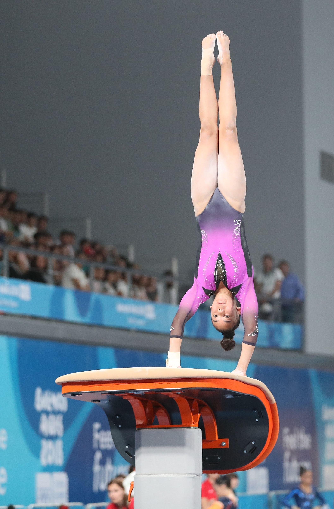

Backwards Vaulting

Backwards vaulting is extremely scary, and dangerous. But, it is also fun. To start, you do your regulat start and run towards the vault. Next, you do a roundoff, landing your feet on the springboard. Then, you flip back, and do whatever skill, like a back handspring or a 1/2 twist, etc. (Image is from Wikimedia Commons by Unknown)
Forwards Vaulting
Forwards vaulting is less scary then backwards vaulting, but it still is hard. You need a lot of momentum, and you need to be able to block super well. Vaulting forwards, you can do front handsprings, or, the "vault of death," (Produnova vault). (Image is from Wikimedia Commons by Unknown)